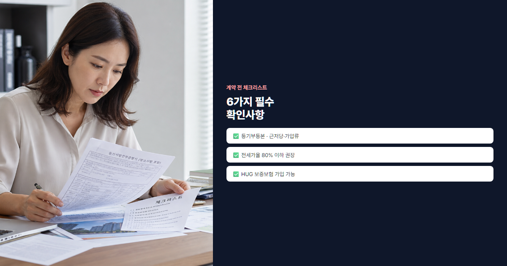

2026 전세사기 예방 완벽 체크리스트 (계약 전·중·후 단계별 필수 확인사항)
전세보증금 2억, 하루아침에 사라진다면?
"전세보증금 2억, 하루아침에 사라진다면?" 직장인에게 전세금은 몇 년간 모은 목돈 전부일 수 있습니다. 2024~2025년 전세사기 피해 신고는 전년 대비 크게 늘었고, 법원에 접수된 전세금 반환 소송도 꾸준히 증가하고 있습니다. 특히 깡통전세·이중계약·신탁부동산 사기가 반복 보도되었습니다. 법원·경찰에 맡기기 전에, 계약 전에 막을 수 있는 것들이 많습니다. 이 글에서는 계약 전·중·후 단계별 체크리스트, 5대 사기 유형, HUG 전세보증보험, 위험 신호 감지법까지 한 번에 정리합니다. "운이 좋아서"가 아니라 "확인해서" 보증금을 지키는 방법입니다.
- 전세사기 5대 유형과 최근 급증 TOP 3를 정리합니다.
- 등기부·전세가율·HUG 보증 등 계약 전 6대 체크를 담았습니다.
- 특약 문구·확정일자·사고 대응까지 계약 중·후 안전장치를 안내합니다.
본론 1. 전세사기 5대 유형 완벽 이해
유형 1: 깡통전세 (전세가율 90%+ 위험)
깡통전세는 집값 대비 전세보증금 비율(전세가율)이 너무 높아, 경매·임대인 파산 시 보증금 전액을 돌려받기 어려운 상황입니다. 예를 들어 매매가 3억인데 전세 2.7억(90%)이면, 임대인이 대출·세금 등으로 집을 넘기더라도 남는 돈이 거의 없습니다. 실전 사례로, A씨는 전세가율 95% 아파트에 2억을 넣었다가 임대인의 추가 대출로 경매에 넘어가 1억 이상 미회수 피해를 봤습니다.
유형 2: 이중계약
한 주택을 여러 임차인에게 동시에 전세 계약하는 유형입니다. 먼저 계약한 사람의 대항력·우선변제권 순위에 따라 늦은 사람이 불리합니다. 등기부만 보면 소유자는 한 명인데, 실제로는 2~3명이 같은 집에 보증금을 넣은 채 잔금일을 기다리다 피해를 보는 패턴입니다.
유형 3: 신탁부동산 사기
부동산이 신탁등기된 경우, 등기부상 소유자와 실제 처분 권한자(신탁사)가 다릅니다. 소유자와 계약해도 신탁사 동의 없으면 무효·분쟁 소지가 큽니다. "소유자가 맞으니 괜찮다"고 넘어가면 전세금을 통째로 잃을 수 있습니다.
유형 4: 대리인 사기
임대인 대신 위임장을 내세운 대리인과 계약하는 경우입니다. 위임장·인감증명서 위조, 권한 범위 초과가 흔합니다. B씨는 조카가 "삼촌 대신" 계약을 주선했고, 잔금 후 삼촌이 등장하지 않아 2년간 소송 끝에 일부만 회수한 사례가 있습니다.
유형 5: 무자본 갭투자 (건축주 파산)
분양·신축 아파트에서 건축주·시행사가 자기돈 없이 전세·담보대출로 건축비를 메우다 파산하는 유형입니다. 입주 전·직후 전세 계약 시 공사 중단·근저당 폭탄으로 이어질 수 있습니다.
💡 최근 급증 유형 TOP 3
- 1위 깡통전세 — 금리·집값 하락기에 전세가율 85% 이상 급증
- 2위 이중·삼중 계약 — 급매·저렴한 전세 미끼
- 3위 대리인·위임장 사기 — 해외·지방 임대인 명목
본론 2. 계약 전 체크리스트
✅ 등기부등본 열람 (인터넷등기소, 700원)
인터넷등기소(www.iros.go.kr)에서 최신 등기부등본을 발급합니다. ① 소유자 이름·주민번호 앞자리가 계약 상대와 일치하는지, ② 근저당·가압류·가처분 설정 여부, ③ 신탁등기·전세권·임차권 등 기존 권리를 확인합니다. 근저당 채권최고액이 매매가에 근접하면 깡통전세 위험이 큽니다.
✅ 건축물대장 확인
세움터·정부24에서 위반건축물·용도 불일치 여부를 봅니다. 불법 증축·상업용 오피스텔을 주거로 전세하는 경우 분쟁·이주 명령 위험이 있습니다.
✅ 전세가율 계산 (매매가 대비 80% 이하 권장)
전세가율 = 전세보증금 ÷ 매매 실거래가 × 100. 일반적으로 80% 이하를 안전 구간으로 봅니다. 85%를 넘기면 HUG 보증 가입도 어려워질 수 있습니다. 매매가는 실거래가 지도에서 동일 단지·면적 최근 거래로 확인하세요.
✅ 임대인 신원 확인
계약 당사자 신분증 원본과 등기부 소유자 정보를 대조합니다. 대리인 계약 시 위임장·인감증명서 원본, 위임 범위에 "임대차계약·보증금 수령"이 포함되는지 확인합니다.
✅ 공인중개사 정보 확인
중개사무소 등록번호·공제가입증서를 확인하고, 국토교통부 중개사 자격 조회로 유효성을 검증합니다. "공인중개사 없이" 진행을 재촉하면 특히 경계하세요.
✅ HUG 전세보증보험 가입 가능 여부 사전 조회
주택도시보증공사(HUG) 홈페이지·앱에서 사전 심사로 해당 주택·금액·임대인 조건으로 보증 가입 가능한지 조회합니다. 가입 불가 집은 이유(전세가율·임대인 신용·권리 하자)를 반드시 확인하고, 원칙적으로 계약을 재검토하는 것이 안전합니다.

📋 계약 전 실전 체크리스트 6개
- □ 등기부등본(당일 발급) — 소유자·근저당·신탁
- □ 건축물대장 — 위반건축물 여부
- □ 전세가율 80% 이하 (실거래가 기준)
- □ 임대인 신분증·대리인 위임장
- □ 공인중개사 등록·공제 확인
- □ HUG 보증보험 사전 가입 가능
| 항목 | 확인 방법 | 위험 신호 |
|---|---|---|
| 등기부 | 인터넷등기소 700원 | 근저당·가압류·신탁 |
| 전세가율 | 실거래가 지도 | 85% 이상 |
| 보증보험 | HUG 사전조회 | 가입 불가 |
| 임대인 | 신분증 대조 | 대리인만 등장 |
| 중개사 | 등록번호 조회 | 무등록·공제 미가입 |
| 건축물 | 세움터 | 위반건축물 |
본론 3. 계약 중 필수 확인
✅ 계약서 특약 필수 문구 5가지
표준 임대차계약서 외에 특약으로 다음을 넣습니다. ① "임대인은 잔금일 현재 등기부상 근저당·가압류 등 권리 하자가 없음을 확인하며, 하자 발견 시 임차인은 계약을 해지하고 보증금 전액을 반환받을 수 있다." ② "잔금일 전 새로운 근저당 설정 시 계약은 무효로 한다." ③ "HUG(또는 SGI·HF) 전세보증보험 가입을 임대인은 거부하지 않는다." ④ "보증금은 임대인 명의 계좌로만 지급한다." ⑤ "계약 종료 후 보증금 미반환 시 임차권등기명령·법적 조치를 취할 수 있다."
✅ 계약금·중도금·잔금 — 임대인 명의 계좌
차명·제3자 계좌 송금은 절대 금물입니다. 통장 사본의 예금주와 등기부 소유자가 일치하는지 잔금 직전 다시 확인합니다.
✅ 확정일자 · 전입신고
확정일자는 주민센터·인터넷(전자민원)에서 계약서에 받습니다. 전입신고는 잔금일 당일(가능하면 잔금 전) 동사무소·온라인으로 합니다. 둘 다 갖춰야 대항력(다음날 0시부터 제3자에 대항)과 우선변제권(전입+확정일자 순위)이 강화됩니다.
실전 팁: 잔금일 아침 등기부 재확인
계약 체결 후 잔금일까지 수 주~수 개월 공백이 생깁니다. 잔금 당일 아침 등기부등본을 다시 발급해 새 근저당·가압류·소유권 이전이 없는지 확인한 뒤 송금하세요. 하자 발견 시 특약에 따라 계약 해지·보증금 반환을 요구할 수 있습니다.
본론 4. 계약 후 안전장치
✅ 전세보증보험 가입 (HUG·SGI·HF)
주택도시보증공사(HUG), SGI, HF 등에서 전세보증금 반환 보증에 가입합니다. 보증료는 연 0.128~0.154% 수준(2026년 기준, 주택·금액별 상이)입니다. 2억 전세면 연 25~30만 원대로, 피해 전체와 비교하면 매우 저렴한 보험입니다. HUG 앱·홈페이지에서 잔금일 이후 30일 이내 신청하는 경우가 많습니다.
✅ 임차권등기명령
계약 만료 후 보증금을 돌려받지 못하면 임차권등기명령을 신청해 등기부에 권리를 기재합니다. 경매 시 우선변제 순위 확보에 도움이 됩니다.
✅ 재계약·이사 시 주의사항
재계약 시에도 등기부등본을 다시 확인합니다. 임대인 변경·근저당 추가가 없는지, 보증보험 갱신 조건을 HUG에 문의하세요. 이사할 때는 전입신고·확정일자를 새 주소로 옮기고, 이전 집 보증금 반환은 임차권등기명령까지 일정을 미리 잡아 두는 것이 좋습니다. 계약 만료 2~3개월 전부터 임대인과 반환 일정·계좌를 서면으로 확인하세요.
✅ 사고 발생 시 대응 절차
① 전세피해지원센터 1533-8119 상담 ② HUG 등 보증사에 이행청구 ③ 보증사 대위변제 후 구상권 행사 ④ 필요 시 소송·경매 참여. 증거(계약서·송금 내역·등기부·확정일자)를 처음부터 보관하세요.
위험 신호 감지법
🚨 이 신호가 보이면 계약 중단을 검토하세요
- 시세보다 유난히 싼 전세 — 깡통·이중계약 미끼. 시세 대비 10% 이상 저렴하면 이유를 반드시 확인.
- 계약 재촉 — "오늘 안 하면 다른 사람이"는 압박. 하루 이틀 더 확인해도 됩니다.
- 대리인만 등장 — 임대인 본인·위임장 원본 없이 진행 거부.
- 잔금일 임박 근저당 설정 — 임대인 추가 대출 = 내 보증금 위험.
- 현금·차명 계좌 — 추적 불가. 명의 계좌·계좌이체만.
- 등기부 열람 거부 — 가장 강력한 위험 신호. 무조건 중단.
실전 사례 & 교훈
사례 A: 깡통전세로 2억 손실 (전세가율 95%)
C씨는 저렴한 전세를 찾다 전세가율 95% 매물에 2억을 넣었습니다. 등기부 근저당을 제대로 보지 않았고, 1년 후 임대인 파산·경매에서 약 8천만 원만 회수, 1.2억 손실. 전세가율·등기부 확인이 핵심이었습니다.
사례 B: HUG 보증보험으로 100% 회수
D씨는 전세가율 75% 집에 HUG 보증에 가입했습니다. 계약 만료 후 임대인이 보증금을 돌려주지 않자 이행청구했고, HUG가 2억 전액을 먼저 지급받았습니다. 보증료 연 30만 원의 가치입니다.
사례 C: 대리인 사기 예방 성공
E씨는 "아버지 대신" 아들만 나온 계약을 거절하고, 임대인 본인·인감증명 위임장 확인 후 계약했습니다. 나중에 알고 보니 위조 위임장으로 다른 피해자가 있었습니다. 신원 확인이 피해를 막았습니다.
FAQ
Q1. 전세보증보험 가입 못하는 집은 피해야 하나요?
원칙적으로 예가 안전합니다. 가입 불가 사유(고전세가율·임대인 신용·권리 하자)는 곧 위험 신호입니다. 불가피하게 계약할 경우 전세금 축소·단기 계약 등을 검토하세요.
Q2. 전세가율 몇 %까지 안전한가요?
보통 80% 이하를 권장하고, HUG는 85% 이하 등 상품별 기준이 있습니다. 90%를 넘기면 깡통전세 위험이 급격히 커집니다.
Q3. 계약 후 등기부에 근저당이 생기면?
임대인이 추가 담보 대출을 한 것입니다. 특약이 있으면 계약 해지·보증금 반환을 주장할 수 있고, 없어도 협의·법적 조치를 검토하세요. 임차권등기명령도 고려합니다.
Q4. 신탁부동산 전세 절대 안 되나요?
신탁사 동의·신탁원부 확인 없이는 위험합니다. 신탁 부동산은 소유자와 계약해도 효력이 없을 수 있어, 전문가 상담 또는 다른 매물 검토를 권합니다.
Q5. 확정일자와 전입신고 순서는?
잔금일 당일 둘 다 처리하는 것이 이상적입니다. 순서는 통상 잔금 → 전입신고 → 확정일자(또는 동시)이며, 다음날 0시부터 대항력이 생깁니다.
Q6. 임대인이 바뀌면 계약 유효한가요?
매매로 소유권이 이전되면 "대항력 있는 임차인"은 새 소유자에게도 계약 관계가 승계됩니다. 다만 전입·확정일자 등 요건을 갖춰야 합니다.
Q7. 사고 시 어디에 신고하나요?
전세피해지원센터 1533-8119, 경찰(사기), HUG·SGI 이행청구, 법원(임차권등기·소송). 증거를 모아 가능한 빨리 상담하세요.
결론
전세사기는 "남의 일"이 아닙니다. 등기부·전세가율·HUG 보증·특약·확정일자·전입신고 — 이 여섯 가지만 제대로 해도 피해 가능성을 크게 줄일 수 있습니다. 내 보증금은 내가 지킨다는 마음으로, 계약 전·중·후 체크리스트를 출력해 하나씩 확인하세요. 시세 확인은 실거래가 지도로, 지도 활용법은 post-29, 청약·무주택은 무주택 기간, 나중에 매수 시 양도세도 미리 점검해 두시기 바랍니다.
본 글은 2026년 7월 기준 일반 정보이며, 전세·보증보험·법령은 개정될 수 있습니다. 계약 전 HUG·법률 전문가 상담을 권장합니다.